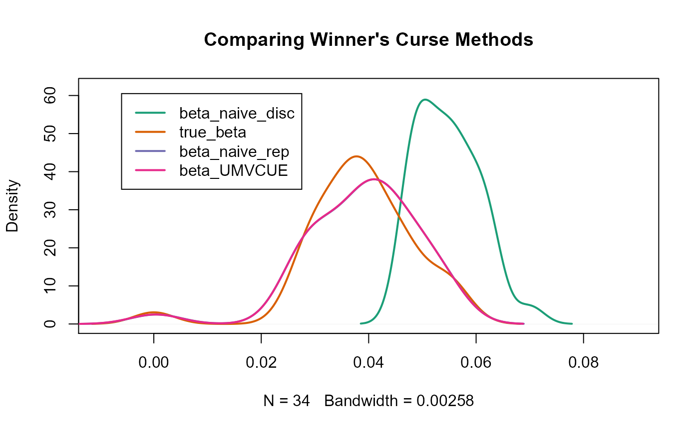

discovery_replication.Rmd
set.seed(1998)
n_snps <- 10^6
effect_snps <- 10000
n_samples <- 30000
maf <- runif(n_snps,0.01,0.5)
se <- 1/sqrt(2*n_samples*maf*(1-maf))
true_beta <- rnorm(effect_snps,0,1)
h2 <- 0.7 # variance explained by effect SNPs
var_y <- sum(2*maf[1:effect_snps]*(1-maf[1:effect_snps])*true_beta^2)/h2
true_beta <- true_beta/sqrt(var_y) # scaling to represent a phenotype with variance 1
true_beta <- c(true_beta, rep(0,n_snps-effect_snps))
stats_disc <- data.frame(rsid=seq(1,n_snps),beta=rnorm(n=n_snps,mean=true_beta,sd=se),se=se)
n_samples_rep <- 450000
se_rep <- 1/sqrt(2*n_samples_rep*maf*(1-maf))
stats_rep <- data.frame(rsid=seq(1,n_snps),beta=rnorm(n=n_snps,mean=true_beta,sd=se_rep),se=se_rep)
head(stats_disc)
#> rsid beta se
#> 1 1 -0.014621130 0.024815677
#> 2 2 0.003692869 0.011860257
#> 3 3 -0.056894722 0.021248309
#> 4 4 -0.023764612 0.025252008
#> 5 5 0.028408413 0.008180033
#> 6 6 -0.001962928 0.009936883
head(stats_rep)
#> rsid beta se
#> 1 1 -0.002743049 0.006407380
#> 2 2 0.002010379 0.003062305
#> 3 3 -0.018377229 0.005486290
#> 4 4 -0.018067325 0.006520040
#> 5 5 0.035889109 0.002112075
#> 6 6 0.002378249 0.002565692
out <- UMVCUE(summary_disc = stats_disc,summary_rep = stats_rep,alpha = 5e-8)
head(out)
#> rsid disc_beta disc_se rep_beta rep_se beta_UMVCUE
#> 1 3965 0.06065460 0.008195368 0.04975788 0.002116035 0.04950988
#> 2 7815 0.06273957 0.008481947 0.04709055 0.002190029 0.04716657
#> 3 4998 -0.05957379 0.008340589 -0.04767109 0.002153531 -0.04774331
#> 4 7261 0.05510613 0.008192669 0.05469022 0.002115338 0.05458631
#> 5 6510 0.05623502 0.008394748 0.05340545 0.002167515 0.05340201
#> 6 9917 0.05466573 0.008178854 0.04179464 0.002111771 0.04180326
library("RColorBrewer")
#> Warning: package 'RColorBrewer' was built under R version 4.0.3
col <- brewer.pal(4,"Dark2")
plot(density(abs(out$disc_beta)),ylim=c(0,62),xlim=c(-0.01,0.09),main="Comparing Winner's Curse Methods",col=col[1],lwd=2)
lines(density(abs(true_beta[out$rsid])),col=col[2],lwd=2)
lines(density(abs(out$rep_beta)),col=col[3],lwd=2)
lines(density(abs(out$beta_UMVCUE)),col=col[4],lwd=2)
legend(-0.006, 60.5, legend=c("beta_naive_disc", "true_beta","beta_naive_rep","beta_UMVCUE"),
col=col,lty=1,lwd=2)
sq_diff <- data.frame(disc_naive = sum((true_beta[out$rsid] - out$disc_beta)^2), rep_naive = sum((true_beta[out$rsid] - out$rep_beta)^2), beta_UMVCUE = sum((true_beta[out$rsid] - out$beta_UMVCUE)^2))
sq_diff
#> disc_naive rep_naive beta_UMVCUE
#> 1 0.01315662 0.0001965074 0.0001941926
mean_abs_diff <- data.frame(disc_naive = mean(abs(true_beta[out$rsid] - out$disc_beta)), rep_naive = mean(abs(true_beta[out$rsid] - out$rep_beta)), beta_UMVCUE = mean(abs(true_beta[out$rsid] - out$beta_UMVCUE)))
mean_abs_diff
#> disc_naive rep_naive beta_UMVCUE
#> 1 0.0165569 0.001853426 0.001842546